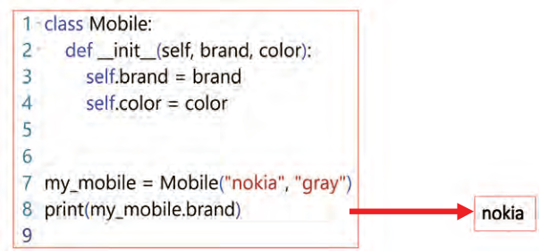
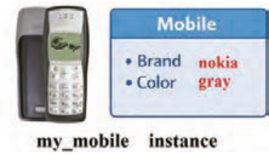
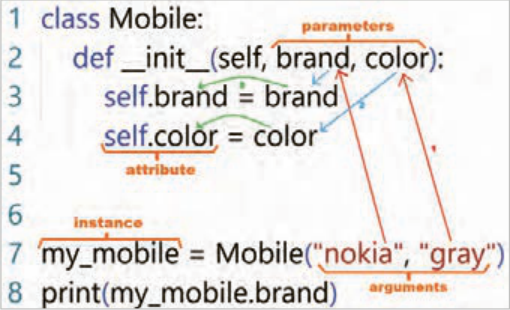
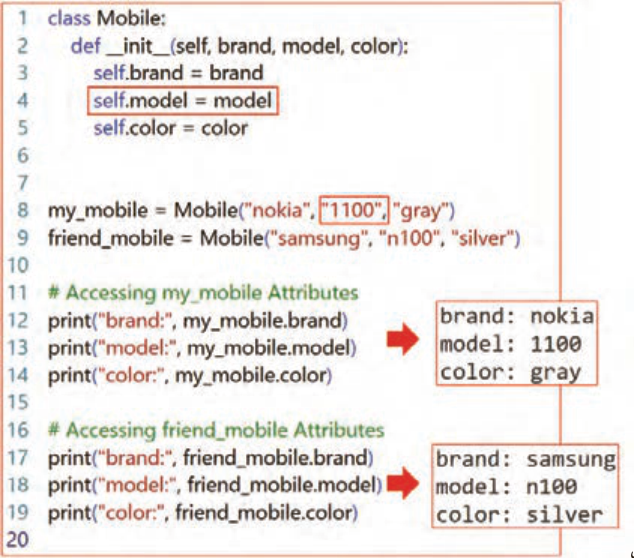
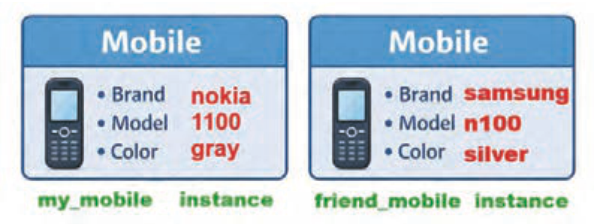
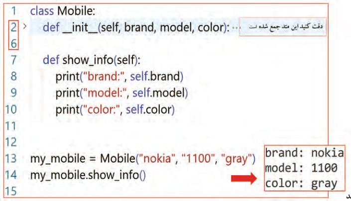
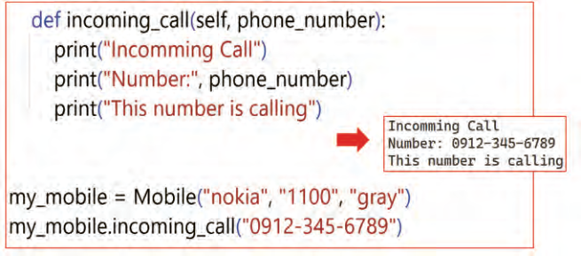

حالا نوبت آن است که در محیط برنامهنویسی، اولین کلاس (class) خود را ایجاد کنید و سپس با استفاده از آن کلاس، یک نمونه(Instance) بسازید. کد شکل 4 را درون یک فایل جدید به دقت تایپ کنید.

شکل 4 اولین کد برای تعریف کلاس و ساخت نمونه
خط 1: یک کلاس به نام Mobile تعریف میشود.
کلاس در واقع یک الگو یا نقشه برای ساختن موبایلهاست.
دقت کنید کلاس، خود موبایل نیست بلکه الگویی برای ساخت موبایلهاست.
بر اساس استانداردهای نامگذاری در پایتون (PEP8)، نام کلاسها باید با استفاده از شیوۀ PascalCase نوشته شود؛ به این معنا که حرف اول نام کلاس و حرف اول تمام کلمات تشکیلدهندۀ آن بزرگ باشد.
خط 2: این متد، نقش متِد سازندۀ کلاس را در پایتون بر عهده دارد. به این متد اصطلاحاً initializer هم میگویند.
هر زمان که از کلاس Mobile یک نمونه ساخته شود، یعنی با اجرای خط 7، این متد بهطور خودکار اجرا میشود.
وظیفه اصلی این متد مقداردهی اولیه به ویژگیهای نمونه (Instance) است.
دقت کنید که ___init_ نامی قراردادی در پایتون است و نمیتوان آن را تغییر داد. در سمت چپ و راست کلمه init دو بار کاراکتر زیرخط (underscore) تایپ شده است.
خطوط 3 و 4: ویژگیهای نمونه را مشخص میکنند.
هر موبایل یک برند و یک رنگ دارد.
در کد ارائه شده، self.brand و self.color هر دو به عنوان ویژگی (attribute) شناخته میشوند.
کلمۀ self به همان نمونهای اشاره میکند که در حال ساخته شدن است و brand و color نام ویژگیهایی هستند که به آن نمونه تعلق دارند.
صفحه ۲۳۹
خطوط 5 و 6: خطوط خالی بر اساس استانداردهای کدنویسی پایتون (PEP8)، لازم است پس از پایان تعریف کلاس، دو خِط خالی قرار داده شود تا مرز بین کلاس و بخش کدهای سراسری (Global) بهوضوح مشخص شود.
خط 7: ساختن نمونه(Instance) در این خط، یک نمونه (instance) به نام my_mobile از روی کلاس Mobile ساختهاید.
مقدار "nokia" برای ویژگِی brand و مقدار "gray" برای ویژگِی color در نظر گرفته شدهاند.

خط 8: دسترسی به ویژگی با استفاده از نام نمونه و علامت نقطه (.)، به ویژگیهای آن دسترسی پیدا میکنید.
این دستور مقدار ویژگی brand را برای نمونه my_mobile چاپ میکند.
شکل 5
خط 9: خط خالی طبق استانداردهای PEP8، پس از پایان کدها نیز یک خط خالی قرار داده میشود تا انتهای فایل از کدها بهصورت خوانا و استاندارد مشخص شود.
توجه داشته باشید که اگر در این مرحله همۀ جزئیات را بهطور کامل متوجه نشدید، نگران نباشید؛ این یک مبحث جدید است و با ادامۀ آموزش و فعالیتهای بیشتر، مرور کدها و ساخت برنامههای بیشتر، به مرور، مفاهیم برایتان روشن میشود و جا میافتد.
حالا برنامه را اجرا کنید، میبینید که مقدار ویژگی brand از موبایلی که ساختهاید یعنی nokia چاپ میشود.
توجه داشته باشید در این مرحله، کلاس فقط شامل ویژگیها (Attributes) است و فعلاً هیچ رفتار یا متدی (Method) بهجز سازنده (___init_) برای نمونهها تعریف نشده است.
حالا با یک تصویر روند اجرای برنامه را شرح داده شده است. شکل 6 را به دقت مشاهده کنید.

شکل 6 روند اجرای برنامه
صفحه ۲۴۰
همانطور که در شکل مشاهده میشود بعد از اجرای خط 7 که برای ساختن نمونه my_mobile است مراحل زیر اتفاق میافتد:
1 آرگومانهای "nokia" و "gray" به متد ___init_ فرستاده و درون پارامترهای brand و color قرار میگیرند.
2 مقدار پارامتر brand درون self.brand و مقدار پارامتر color درون self.color ریخته میشوند.
3 در این مرحله نمونه مورد نظر ساخته خواهد شد.
فعالیت
در انتهای برنامه دستوری اضافه کنید که رنگ موبایل را چاپ نماید.
فعالیت
داخل متد ___init_ دستوری اضافه کنید که مدل گوشی شما را نیز به عنوان ویژگی در نظر بگیرد.
فراموش نکنید که در خط 7 نیز باید مدل گوشی خودتان را اضافه کنید. سعی کنید خودتان این فعالیت را انجام دهید ولی اگر هنوز ابهام داشتید در ادامه پاسخ این کد را میبینید و میتوانید با کد خودتان مقایسه کنید.
در ادامه بر اساس کلاسی که تعریف کردهاید یک نمونه دیگر به عنوان موبایلی برای دوستتان بسازید. کد شکل 7 را به دقت بنویسید.

شکل 7 ساختن یک نمونه به عنوان گوشی برای دوستتان
صفحه ۲۴۱
خط 4: یک ویژگی جدید برای مدل گوشی همراه تعریف و مقداردهی شده است.
خط 9: یک نمونه جدید با نام friend_mobile با ویژگیهایی متفاوت از my_mobile ایجاد شده است.

شکل 8
خطوط 15 تا 17: در این خطوط ویژگیهای نمونه دوم چاپ شده است.
نکته
دقت کنید my_mobile و friend_mobile هر دو نمونههایی مجزا هستند که از روی کلاس Mobile ساخته شدهاند.
در ادامه یک متد به کلاس Mobile اضافه کنید تا مقدار تمام ویژگیهای نمونهای که ساختهاید را چاپ کند. کد قبلی را مانند شکل 9 تغییر دهید.

شکل 9 افزودن متد
show_info
صفحه ۲۴۲
خط 7: این خط، تعریف یک متد (method) به نام show_info را در داخل کلاس Mobile انجام میدهد.
متدها، توابعی هستند که به یک کلاس مرتبط هستند و میتوانند به ویژگیهای (Attributes) آن کلاس دسترسی داشته باشند.
پارامتر self در تعریف متد، به خودِ نمونهای که متد روی آن فراخوانی میشود، اشاره میکند. به عبارت دیگر، self به کلاس Mobile اجازه میدهد تا به ویژگیهای (Attributes) خاص هر نمونه از نوع Mobile دسترسی پیدا کند.
خطوط 8 تا 10: این دستور، مقادیر ویژگیهای برند، مدل و رنگ نمونه را با استفاده از برچسبهای مشخص، نمایش میدهد.
خط 14: در این خط متد show_info از نمونه my_mobile فراخوانی و اجرا میشود.
به همین ترتیب میتوانید متدهای بیشتری برای این کلاس تعریف کنید. به عنوان مثال متد incoming_call برای نمایش پیام هنگام تماس دریافتی میباشد. کدهای این متد را در زیِر متِد show_info براساس شکل 10 بنویسید.

شکل 10 افزودن متد
incoming_call
اولین خط، تعریف متدی به نام incoming_call را در داخل کلاس Mobile انجام میدهد. این متد یک پارامتر به نام phone_number را دریافت میکند که نشاندهنده شماره تلفن تماسگیرنده است.
دستورات داخل متد، پیام "تماس ورودی" و شماره تلفن تماسگیرنده را در خروجی نمایش میدهند.
دقت کنید این متد باید درون کلاس Mobile و همسطح متد ___init_ تعریف شود، بنابراین یک tab جلوتر از بدنه کلاس قرار میگیرد.
در آخرین خط برنامه متد incoming_call را بر روی نمونه my_mobile فراخوانی میکند.
آرگومان "0912-345-6789" به عنوان پارامتر phone_number ارسال میشود که نشاندهنده شماره تلفن تماسگیرنده است. سپس متد اجرا میشود و پیامهای مشخص شده و شماره تلفن ارائه شده را نمایش میدهد.
صفحه ۲۴۳
فعالیت
در کلاس Mobile متدی با نام make_call ایجاد کنید. این متد باید یک پارامتر به نام phone_number دریافت کند که شماره تلفنی که میخواهید با آن تماس بگیرید را در خود نگه دارد. متد باید با چاپ پیامهایی مناسب، شروع عملیات شمارهگیری را اعلام کند. به عنوان مثال، میتوانید پیامهایی مانند
"...Calling" یا "...Dialing" را چاپ کنید.
تعیین مقدار پیش فرض برای ویژگیها برای جذابیت و کارایی بیشتر در ادامه، یک ویژگی تعریف خواهد شد که بعد از اجرای برنامه مقدار آنها قابل تغییر باشند. از این رو درون کلاس، ویژگی وضعیت روشن و خاموش بودن (status) و یک مقدار پیش فرض هم برای آن تعریف خواهد شد. کافیست در متد ___init_ یک ویژگی جدید مانند کد زیر تعریف کنید.
"self.status = "on
توجه داشته باشید هنگام تعریف نمونه دیگر ضرورتی ندارد مقداری برای این ویژگی تعریف شود.
تغییر مقدار ویژگی: در این روش پس از ایجاد نمونه my_mobile به سادگی با نوشتن کد زیر، مقدار آن تغییر خواهد کرد.
در این دستور از نشانه dot یا همان نقطه برای دسترسی به ویژگی یک نمونه استفاده شده است. این خط از پایتون میخواهد برای نمونه my_mobile ویژگی status مرتبط با آن را پیدا کند و در ادامه مقدار " off" را درون آن قرار دهد.
ارثبری (Inheritance)
فرض کنید در یک شرکت تولیدکنندۀ گوشی همراه، تاکنون تنها نسخههای پایۀ تلفن همراه تولید میشده است؛ گوشیهایی که امکانات آنها به ویژگیهایی مانند برند، مدل، رنگ و وضعیت محدود بوده و فاقد سیستمعامل و دوربین هستند. مهم ترین کاری که با این گوشیهای همراه میتوان انجام داد، تماس تلفنی و ارسال پیامک است. در این شرکت، یک کلاس اصلی به نام Mobile وجود دارد که این ویژگیهای پایه را مدلسازی میکند.
حالا شرکت تصمیم گرفته است نسل جدیدی از گوشیهای همراه را طراحی کند؛ گوشیهای هوشمند (Smartphone) که در کنار ویژگیهای پایۀ گوشی همراه، قابلیتهایی مانند سیستمعامل و دوربین را ارائه میدهند و همچنین مدلهایی تخصصیتر، مانند گوشیهای مناسب بازی (Gamingphone)، که برای اجرای بهتر بازیها با امکانات سختافزاری قویتر طراحی شدهاند.
1 Smartphone: تلفن هوشمند نوعی تلفن همراه است که با بهرهگیری از سیستمعامل (OperatingSystem)، امکان اجرای برنامهها و ارائۀ قابلیتهای پیشرفته، فراتر از تماس و پیامک را فراهم میکند.
دارای ویژگی دوربین پیشرفته دارای ویژگی سیستم عامل قابل نصب و ارتقا
Page 238
Now it is time, in the programming environment, to create your first class (class) and then use that class to build an instance (Instance). Carefully type the code of Figure 4 into a new file.
Figure 4 First code for defining a class and creating an instance
Line 1: A class named Mobile is defined.
A class is in fact a pattern or blueprint for building mobiles.
Note that a class is not itself a mobile; rather, it is a pattern for building mobiles.
Based on Python naming standards (PEP8), class names should be written using the PascalCase style; that is, the first letter of the class name and the first letter of every word that forms it should be uppercase.
Line 2: This method plays the role of the class constructor method in Python. This method is also called an initializer.
Whenever an instance is created from the Mobile class—that is, when line 7 runs—this method runs automatically.
The main job of this method is to initialize the instance (Instance) attributes.
Note that __init__ is a conventional name in Python and cannot be changed. On the left and right of the word init, the underscore (underscore) character is typed twice.
Lines 3 and 4: These specify the instance attributes.
Every mobile has a brand and a color.
In the given code, self.brand and self.color are both recognized as attributes (attribute).
The word self refers to the same instance that is being created, and brand and color are the names of attributes that belong to that instance.
Page 239
Lines 5 and 6: Blank lines According to Python coding standards (PEP8), after the end of a class definition, two blank lines should be placed so that the boundary between the class and the global (Global) code section is clearly marked.
Line 7: Creating an instance (Instance) On this line, you have created an instance (instance) named my_mobile from the Mobile class.
The value "nokia" is assigned for the brand attribute and the value "gray" for the color attribute.
Line 8: Accessing an attribute Using the instance name and the dot (.) symbol, you access its attributes.
This statement prints the value of the brand attribute for the my_mobile instance.
Figure 5
Line 9: Blank line According to PEP8 standards, after the end of the code a blank line is also placed so that the end of the file is marked in a readable and standard way relative to the code.
Keep in mind that if you do not fully understand every detail at this stage, do not worry; this is a new topic, and with continued instruction and more activities, reviewing the code, and building more programs, the concepts will gradually become clear and settle in for you.
Now run the program; you will see that the value of the brand attribute of the mobile you created, namely nokia, is printed.
Note that at this stage the class includes only attributes (Attributes), and so far no behavior or method (Method) other than the constructor (__init__) has been defined for the instances.
Now the program’s execution flow is explained with a diagram. Observe Figure 6 carefully.
Figure 6 Program execution flow
Page 240
As you see in the figure, after line 7 runs to create the my_mobile instance, the following steps occur:
1 The arguments "nokia" and "gray" are sent to the __init__ method and placed in the brand and color parameters.
2 The value of the brand parameter is assigned to self.brand and the value of the color parameter to self.color.
3 At this stage the desired instance will be created.
Activity
At the end of the program, add a statement that prints the mobile’s color.
Activity
Inside the __init__ method, add a statement that also treats your phone’s model as an attribute.
Do not forget that on line 7 you must also add your phone’s model. Try to do this activity yourself, but if you still have questions, later you will see the answer to this code and can compare it with your own code.
Next, based on the class you defined, create another instance as a mobile for your friend. Carefully write the code of Figure 7.
Figure 7 Creating an instance as a phone for your friend
Page 241
Line 4: A new attribute for the mobile phone’s model has been defined and assigned a value.
Line 9: A new instance named friend_mobile has been created with attributes different from my_mobile.
Figure 8
Lines 15 to 17: On these lines the attributes of the second instance have been printed.
Note
Note that my_mobile and friend_mobile are both separate instances created from the Mobile class.
Next, add a method to the Mobile class that prints the values of all attributes of the instance you have created. Change the previous code as in Figure 9.
Figure 9 Adding a method
show_info
Page 242
Line 7: This line defines a method (method) named show_info inside the Mobile class.
Methods are functions that are associated with a class and can access that class’s attributes (Attributes).
The self parameter in the method definition refers to the instance on which the method is called. In other words, self allows the Mobile class to access the specific attributes (Attributes) of each instance of type Mobile.
Lines 8 to 10: This statement displays the values of the instance’s brand, model, and color attributes using specified labels.
Line 14: On this line the show_info method is called and run on the my_mobile instance.
In the same way, you can define more methods for this class. For example, the incoming_call method is for displaying a message on an incoming call. Write the code for this method below the show_info method according to Figure 10.
Figure 10 Adding a method
incoming_call
The first line defines a method named incoming_call inside the Mobile class. This method receives a parameter named phone_number that represents the caller’s phone number.
The statements inside the method display the message "incoming call" and the caller’s phone number in the output.
Note that this method must be defined inside the Mobile class and at the same level as the __init__ method, so it is placed one tab further in than the class body.
On the last line of the program, the incoming_call method is called on the my_mobile instance.
The argument "0912-345-6789" is sent as the phone_number parameter, which represents the caller’s phone number. Then the method runs and displays the specified messages and the provided phone number.
Page 243
Activity
In the Mobile class, create a method named make_call. This method should receive a parameter named phone_number that holds the phone number you want to call. The method should announce the start of the dialing operation by printing appropriate messages. For example, you can print messages such as
"...Calling" یا "...Dialing" را چاپ کنید.
Setting default values for attributes For greater appeal and usefulness, next an attribute will be defined whose value can be changed after the program runs. Therefore, inside the class, an on/off status attribute (status) and a default value for it will also be defined. It is enough to define a new attribute in the __init__ method as in the code below.
"self.status = "on
Note that when defining an instance, it is no longer necessary to provide a value for this attribute.
Changing an attribute value: In this approach, after creating the my_mobile instance, you can simply change its value by writing the code below.
In this statement, the dot symbol, or period, is used to access an instance attribute. This line asks Python to find the status attribute associated with the my_mobile instance and then place the value "off" into it.
ارثبری (Inheritance)
Suppose that in a mobile phone manufacturing company, until now only basic versions of mobile phones have been produced—phones whose capabilities have been limited to attributes such as brand, model, color, and status, and that lack an operating system and a camera. The most important things you can do with these mobile phones are make phone calls and send text messages. In this company, there is a main class named Mobile that models these basic attributes.
Now the company has decided to design a new generation of mobile phones: smart phones (Smartphone) that, alongside the basic attributes of a mobile phone, offer capabilities such as an operating system and a camera, and also more specialized models, such as phones suitable for gaming (Gamingphone), designed with stronger hardware features for better game performance.
1 Smartphone: A smart phone is a type of mobile phone that, by using an operating system (OperatingSystem), makes it possible to run apps and provide advanced capabilities beyond calling and texting.
Has an advanced camera attribute Has an installable and upgradable operating system attribute